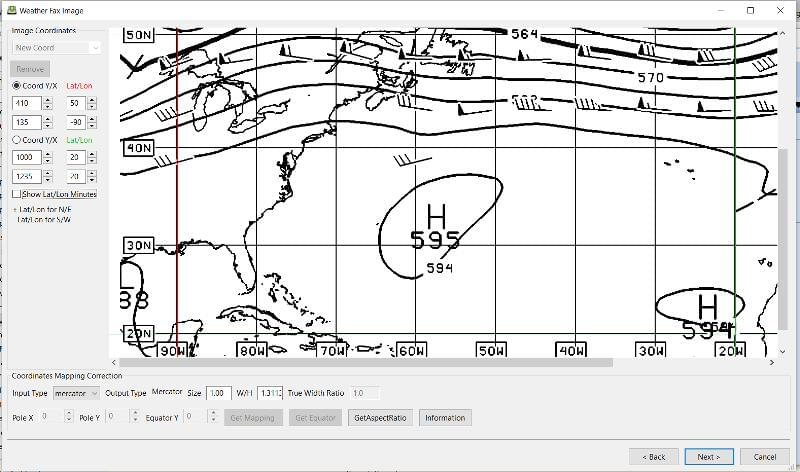

Weatherfax
Retrieves internet image files, reads image files or decodes audio and then Overlays the image on top of charts.

Weatherfax
Retrieves internet image files, reads image files or decodes audio and then Overlays the image on top of charts.
Install Weatherfax Plugin. Enable it in the Settings > Plugin Tab. Then open it and explore the top menus.
With an internet connection it is quite easy to select the “HF Radio Schedules” to select and set alarms for use with a reciever, or to select the Internet Schedules and then retrieve Weatherfaxes via the Internet and overlay on the chart. Audio Capture requires a connection.

If you have an internet connection, first Retrieve > All > HF Radio Schedules.
Then Retrieve > Internet > Select NOAA > Select Boston (for example) > Select 24hr 500mb Forecast
The Weatherfax image file will download and be overlaid directly onto a chart.

Lat 42 Long -70 –> Servers: Noaa —> Regions: Atlantic —→ Select Contents —→ Retrieve
Lat 42 Long -70 –> Servers: Passage —> Regions: N. Atlantic —→ Select Contents —→ Retrieve
The plugin data directory contains an WeatherFaxInternetRetrieval.xml file that has database for meterological sites. The “Internet Retrieval” Option uses this schedule. It is a wonderful planning tool for cruises or passagemaking. There are several options, but first Select “Internet” to retrieve HF Radio Schedules via the internet. Then Select “NOAA” Under “Servers” you will see “Stations” fill up. Then select “Boston” and the Internet Retrieval choices are automatically listed in the menu area. Select several faxes and pick “Retrieve Scheduled” or “Retrieve Selected”.

Aviation Americas Forecast retrieved via the internet.

Passage Weather Atlantic 012 Wind via internet.

Bermuda 3 day via internet.

NOAA Atlantic 24hr 500mb via internet.

NOAA Atlantic 24hr Surface via internet.

Passage Weather New England Wind 012

Passage Weather Nova Scotia Wind 021

List of Weatherfaxes downloaded. Highlighted one shows overlaid on charts.
The weatherfax will be overlayed generally in the proper location provided the weather service has not changed their fax formats. (The user can modify the associated WeatherFaxInternetRetrieval.xml file appropriately to add or modify the actions.) Users should please post changes to this file to the Weatherfax Thread for the next release.
The plugin has a builtin database (WeatherFaxSchedules.xml) for HF Radio Weather Service Fax transmissions, which when used properly can automatically alert the user and begin decoding these faxes.
Retrieve > RF Radio Schedule Menu on the Filter Tab.

Retrieve > RF Radio Schedule Menu on the 1 minute Alarm Tab.

Retrieve > RF Radio Schedule Menu on the Capture Options Tab.

Retrieve > RF Radio Schedule Menu on the Information Tab.

Select Retrieve → Audio Capture (Ctrl+A)
A line from the SSB radio to the audio input of the sound card should be attached, and the radio tuned to the appropriate frequency (1.9khz below listed frequency and SSB mode) The SSB BFO must be adjusted correctly.

The images decoded can then be calibrated and overlayed on charts. The resulting image can be exported to a chart, so the plugin also works as a general purpose conversion tool to make charts from images.
The plugin can read and open numerous common image files, and audio files, and can save Kap files. The next step in development is to have it read Kap for ease of use with respect to coordinates being recorded and reused.

Here are some examples of the gif, png, tif weatherfax files that can be used:
The objective is to set the x/y coordinates and lat/long properly so that the image will map directly over the proper area on the charts/globe. The Image Wizard allows user control over the necessary settings in a step by step process which ends in a successful chart overlay or not, depending on the skill of the user. If it does not work properly the first time, simply try it again. There are two basic types of projections the wizard can handle.
If the fax is a Mercator projection (orthogonal, not polar), click through the next screen that comes up and at the second screen set the coordinates and lat/long properly. (Screenshots will be added later) and click on through to see the fax overlaid on the charts.
Note: It is very difficult to test for poor coordinate and lat/long input, so it is best to have your lat long correct, otherwise strange things may happen with the overlay in Opencpn.
I first use a separate image viewer with the selected fax image, to zoom in and to write down the Lat/long and coordinates that I will be using. If you plan to export to a chart file then you should select “Get Aspect Ratio”

There are other techniques used to modify a Polar fax onto a Mercator projection chart which are reviewed on the forum and will be more fully described later. Review the posts following this Cruiser's Forum Post in the Weatherfax Thread in the Forums.

Coordinate 1 (Red) -Select a high latitude which must also lie on the vertical meridian running through the pole (N or S)
Coordinate 2 (Blue) - Select an opposing corner (either side) with lower latitude. Then hit Get Map, the Blue circles should follow the latitudes of respective coords. Adjust the left/right location with the PoleX value and adjust the circle radius with the PoleY value. Set the True Width Ratio value to 1.0.
From here, it should be possible to click “get mapping”
True width Ratio - Adjusts the width of the blue circles (a fraction like .8 makes the circles wider, and 1.2 makes them narrower). Adjust the true width ratio such that the blue circles align with the associated latitude lines, otherwise the “Apply” transformation will not render straight lat/long lines or will fail.
Pole X - Moves the center of the blue circles left and right. The blue circles should be centered on the vertical meridian which goes through the pole.
Pole Y - Moves the center of the blue circles up and down. The blue circles should be centered on the pole. Hit get mapping to see how this is working, because the blue rings change in width, and sometime the ring closest to the pole flips if the value is too far out of whack.
Equator Y - This does not appear to do much when you change the value, more about this value later.
If you are starting fresh with a Polar, and the blue rings are too wide after hitting Get Mapping, first check the lat/long entered and reset coords to be sure they are hit, then Hit 'get mapping again' then adjust the “True width ratio” so the blue rings align with the latitude lines. Once that is done don't hit “Get Mapping” again, hit “Apply” the lines should be straight and orthogonal.
Here is an example of a WxFax overlay in Opencpn

Image files that are downloaded and overlaid onto charts with specific coordinates, can now be saved as Kap files that save long/lat and coordinates with the file.

Hopefully the plugin will also be made to read Kap files so that they can be automatically overlaid on charts without having to use the WeatherFax Image Wizard.
Thanks to Sean for a great Plugin!
{kind=link}
{kind=link}
{kind=link}
{kind=link}
{kind=link}
{kind=link}
{kind=link}